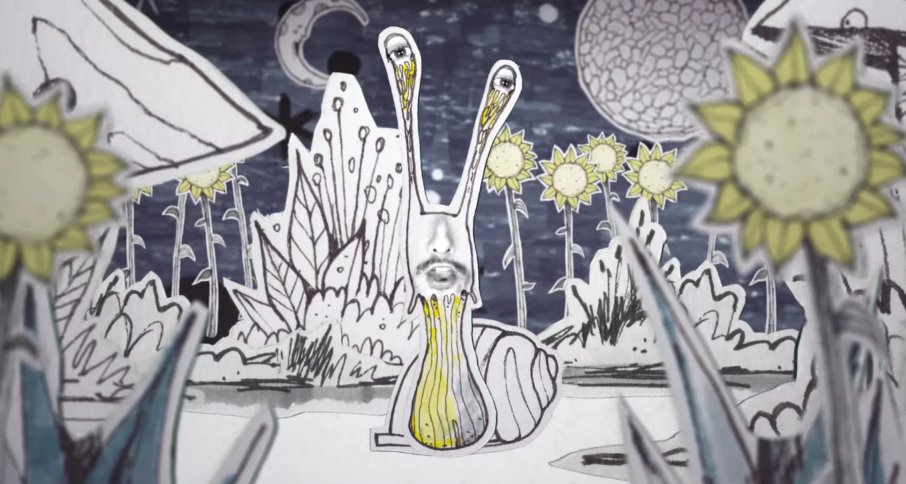
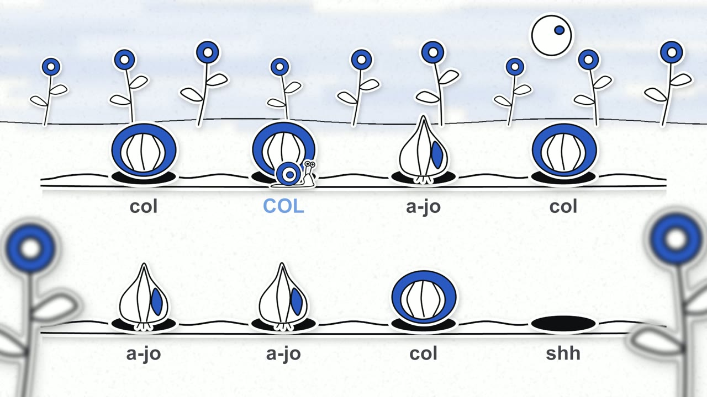
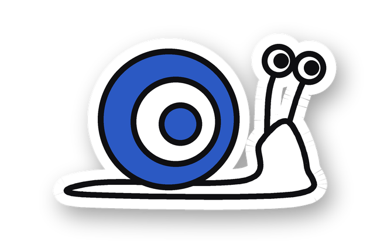
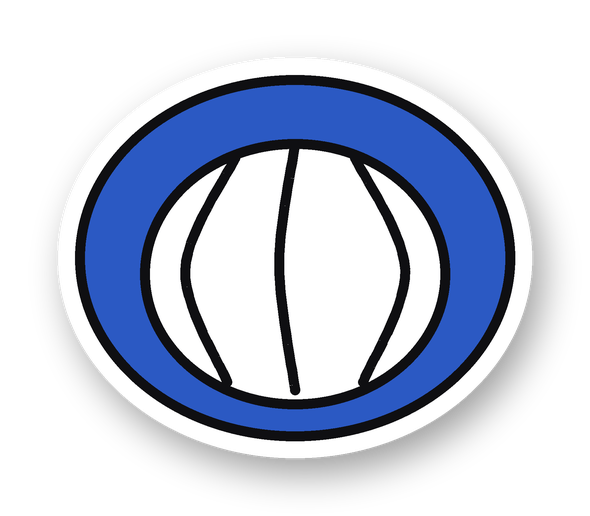
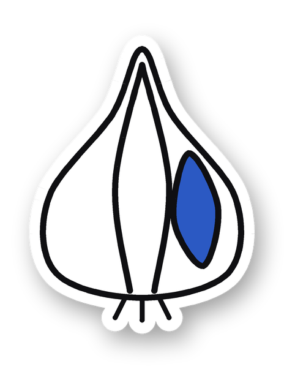
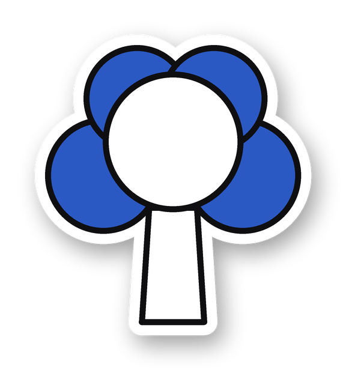
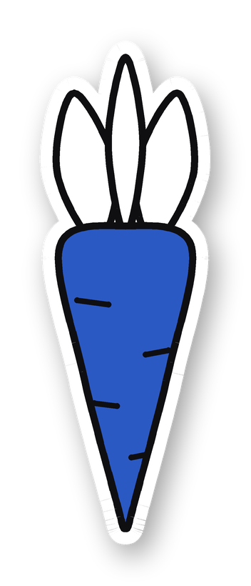
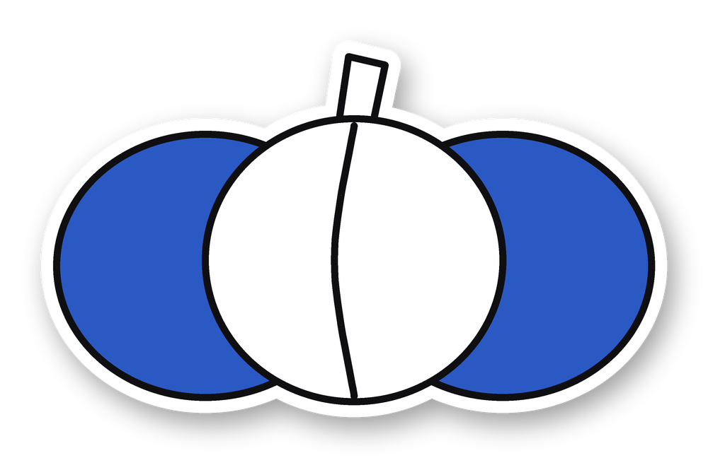
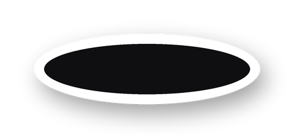

<meta charset="utf-8">
<meta name="viewport" content="width=device-width, initial-scale=1, viewport-fit=cover">
<title>Artistic Beat</title>
<meta name="claude:viewport-fit-sides" content="cover">
<link rel="preconnect" href="https://fonts.googleapis.com">
<link rel="preconnect" href="https://fonts.gstatic.com" crossorigin>
<link rel="stylesheet" href="https://fonts.googleapis.com/css2?family=Bricolage+Grotesque:opsz,wght@12..96,400;12..96,600;12..96,800&family=Instrument+Sans:ital,wght@0,400;0,500;0,600;1,400&family=DM+Mono:wght@400;500&display=swap">
<style>
  /* Layout: una hoja de papel blanco a una columna; tinta negra para el texto y las líneas, azul Artistic solo en los toques */
  :root {
    --paper: #ffffff;
    --ink: #111216;
    --ink-soft: #4a4d57;
    --rule: #d9dce4;
    --blue: #2b59c3;
    --blue-wash: #eef2fb;
    --display: "Bricolage Grotesque", "Segoe UI", system-ui, sans-serif;
    --body: "Instrument Sans", "Segoe UI", system-ui, sans-serif;
    --mono: "DM Mono", ui-monospace, "Cascadia Mono", Consolas, monospace;
    color-scheme: light;
  }
  * { box-sizing: border-box; }
  html { background: var(--paper); }
  body {
    background: var(--paper);
    color: var(--ink);
    font: 400 17px/1.6 var(--body);
    padding-left: max(16px, env(safe-area-inset-left, 0px));
    padding-right: max(16px, env(safe-area-inset-right, 0px));
    padding-block: 0 64px;
  }
  .sheet { max-width: 920px; margin: 0 auto; }
  a { color: var(--blue); text-underline-offset: 3px; }
  a:focus-visible { outline: 2px solid var(--blue); outline-offset: 2px; }

  /* Portada */
  .cover { padding-block: 56px 32px; display: grid; gap: 28px; }
  .eyebrow {
    font: 500 13px/1.4 var(--mono);
    letter-spacing: 0.08em;
    text-transform: uppercase;
    color: var(--blue);
    display: flex; flex-wrap: wrap; gap: 6px 18px;
  }
  .eyebrow span + span::before { content: "·"; margin-right: 18px; color: var(--ink-soft); }
  h1 {
    font: 800 clamp(48px, 9vw, 104px)/0.92 var(--display);
    letter-spacing: -0.035em;
    margin: 0;
    text-wrap: balance;
  }
  h1 em { font-style: normal; color: var(--blue); }

  /* Secciones */
  section { padding-block: 56px 8px; border-top: 1px solid var(--rule); margin-top: 48px; }
  .head { display: grid; grid-template-columns: 56px 1fr; align-items: baseline; gap: 0 8px; margin-bottom: 24px; }
  .num { font: 500 15px/1 var(--mono); color: var(--blue); }
  h2 { font: 600 clamp(28px, 4.4vw, 40px)/1.1 var(--display); letter-spacing: -0.02em; margin: 0; text-wrap: balance; }
  .body { padding-left: 64px; display: grid; gap: 20px; }
  .body > * { margin: 0; }
  p { max-width: 64ch; }
  .lead { font-size: 19px; }
  @media (max-width: 640px) {
    .head { grid-template-columns: 40px 1fr; }
    .body { padding-left: 0; }
  }

  /* En columna flex el pie nunca se monta, aunque la imagen no cargue */
  figure.photo { margin: 0; display: flex; flex-direction: column; }
  figure.photo img, figure.photo video {
    display: block; width: 100%; height: auto;
    border: 1px solid var(--rule);
    background: var(--ink);
  }
  figcaption { font-size: 14px; color: var(--ink-soft); padding-top: 10px; }
  figcaption b { color: var(--ink); font-weight: 600; }

  /* Dos versiones del mismo ritmo, una al lado de la otra */
  .duo { display: grid; grid-template-columns: repeat(2, minmax(0, 1fr)); gap: 20px; }
  @media (max-width: 640px) { .duo { grid-template-columns: 1fr; } }

  .traits { display: grid; grid-template-columns: repeat(2, minmax(0, 1fr)); gap: 20px 32px; padding: 0; list-style: none; }
  .traits li { border-top: 2px solid var(--ink); padding-top: 12px; min-width: 0; }
  .traits li.wide { grid-column: 1 / -1; }
  .traits b { display: block; font-family: var(--display); font-weight: 600; font-size: 18px; margin-bottom: 4px; }
  @media (max-width: 560px) { .traits { grid-template-columns: 1fr; } }

  .palette { display: grid; grid-template-columns: repeat(3, minmax(0, 1fr)); gap: 12px; }
  .swatch { border: 1px solid var(--ink); display: grid; grid-template-rows: 72px auto; min-width: 0; }
  .swatch i { display: block; border-bottom: 1px solid var(--ink); }
  .swatch div { padding: 10px 12px; font-size: 14px; line-height: 1.4; }
  .swatch b { display: block; font-family: var(--display); font-size: 16px; }
  .sw-white i { background: var(--paper); }
  .sw-black i { background: var(--ink); }
  .sw-blue i { background: var(--blue); }
  @media (max-width: 560px) { .palette { grid-template-columns: 1fr; } .swatch { grid-template-rows: 44px auto; } }

  .callout { background: var(--blue-wash); border-left: 3px solid var(--blue); padding: 16px 20px; max-width: 64ch; }

  .split { display: grid; grid-template-columns: minmax(0, 1fr) 220px; gap: 32px; align-items: center; }
  .split img { width: 100%; height: auto; }
  @media (max-width: 640px) { .split { grid-template-columns: 1fr; } .split img { max-width: 220px; } }

  /* Tablas */
  .table-wrap { overflow-x: auto; }
  table { width: 100%; border-collapse: collapse; font-size: 16px; }
  th {
    text-align: left; font: 500 12px/1.3 var(--mono); letter-spacing: 0.08em; text-transform: uppercase;
    color: var(--paper); background: var(--blue); padding: 10px 14px;
  }
  td { padding: 14px; border-bottom: 1px solid var(--rule); vertical-align: middle; }
  tr:last-child td { border-bottom: 2px solid var(--ink); }
  .figura { font-family: var(--display); font-weight: 600; font-size: 17px; white-space: nowrap; }
  .veg { display: flex; align-items: center; gap: 12px; white-space: nowrap; font-weight: 500; }
  .veg img { width: 52px; height: 52px; object-fit: contain; flex: none; }
  .why { color: var(--ink-soft); min-width: 180px; }

  /* Un tiempo dibujado: la caja es el pulso, cada marca una sílaba en su sitio */
  .beat { display: grid; gap: 6px; min-width: 96px; }
  .beat-bar { position: relative; height: 22px; border: 1.5px solid var(--ink); border-radius: 2px; }
  .beat-bar.two { width: 100%; }
  .beat-bar.one { width: 50%; min-width: 48px; }
  .beat-bar span { position: absolute; top: 3px; bottom: 3px; width: 6px; margin-left: 3px; background: var(--blue); border-radius: 1px; }
  .beat-bar span.long { width: auto; right: 3px; }
  .beat code { font: 500 13px/1 var(--mono); color: var(--ink-soft); }

  .price { font-variant-numeric: tabular-nums; white-space: nowrap; color: var(--ink-soft); }
  .price.set { color: var(--ink); font-weight: 600; }

  .stave { list-style: none; padding: 0; display: grid; gap: 0; max-width: 64ch; }
  .stave li { display: grid; grid-template-columns: 28px 1fr; gap: 12px; padding: 14px 0; border-bottom: 1px solid var(--rule); }
  .stave li::before { content: ""; width: 14px; height: 14px; border-radius: 50%; border: 2px solid var(--ink); margin-top: 5px; }
  .stave li:nth-child(odd)::before { background: var(--blue); border-color: var(--blue); }


  footer { margin-top: 64px; padding-top: 20px; border-top: 3px solid var(--ink); display: flex; flex-wrap: wrap; justify-content: space-between; gap: 8px; font: 400 13px/1.4 var(--mono); color: var(--ink-soft); }
</style>

<main class="sheet">
  <header class="cover">
    <div class="eyebrow"><span>Artistic</span><span>Propuesta 1</span><span>Programa para crear vídeos de ritmo</span></div>
    <h1>Artistic <em>Beat</em></h1>
  </header>

  <section id="programa">
    <div class="head"><span class="num">01</span><h2>Qué es el programa</h2></div>
    <div class="body">
      <p class="lead">Artistic Beat es un programa para que el equipo de la escuela cree sus propios vídeos de ritmo, sin saber animar. Se le da el ritmo y la canción, y el programa monta un mundo de papel recortado (en esta propuesta, un huerto) donde cada figura rítmica crece, salta y se ilumina justo cuando suena.</p>
      <ul class="stave">
        <li><span><b>Se carga el ritmo,</b> como archivo MIDI o escrito con palabras («col col a-jo col»).</span></li>
        <li><span><b>Se añade la canción</b> con la que se va a practicar.</span></li>
        <li><span><b>Se elige cómo se ve:</b> con figuras musicales, con hortalizas o con otra lectura que se haya añadido, como palmadas.</span></li>
        <li><span><b>Se previsualiza</b> y se exporta el vídeo listo para clase o para redes.</span></li>
      </ul>
      <ul class="traits">
        <li><b>Sin animar a mano</b>El programa reconoce cada figura del ritmo y la anima solo, sincronizada con la música.</li>
        <li><b>Mismo ritmo, varias lecturas</b>Notas con sus sílabas (ta, ti-ti, tri-o-la…) u hortalizas con su nombre (col, a-jo, bró-co-li…).</li>
        <li><b>Vídeo en alta calidad</b>Exporta en Full HD o 4K, con la canción incluida.</li>
        <li><b>Avisa de los errores</b>Si un ritmo no lo reconoce, lo señala antes de exportar.</li>
        <li><b>También en clase, en directo</b>Se proyecta a pantalla completa, se repite en bucle y se puede poner más lento (sin que la canción cambie de tono) para practicar sin exportar nada.</li>
        <li><b>Para practicar la lectura</b>Las sílabas se pueden ocultar con un clic, para que los alumnos lean el ritmo solos. Un golpe suena en cada nota si se quiere.</li>
        <li class="wide"><b>Lo que el equipo necesite</b>Además de notas y hortalizas, se pueden añadir más lecturas a petición: palmadas y percusión corporal, instrumentos, animales… El ritmo es el mismo; cambia lo que se ve y se dice.</li>
      </ul>
    </div>
  </section>

  <section id="muestra">
    <div class="head"><span class="num">02</span><h2>Muestra del programa</h2></div>
    <div class="body">
      <p class="lead">Estos dos vídeos salen del mismo archivo MIDI y la misma canción. Solo cambia la opción de dibujo: figuras musicales u hortalizas.</p>
      <div class="duo">
        <figure class="photo">
          <video src="video/huerto_notas.mp4" poster="img/poster_notas.jpg" controls preload="metadata" playsinline width="1920" height="1080" aria-label="Huerto con figuras musicales y sílabas rítmicas"></video>
          <figcaption><b>Con figuras musicales</b> · ta, ti-ti, tri-o-la, ti-ri-ti-ri, ta-a</figcaption>
        </figure>
        <figure class="photo">
          <video src="video/huerto_hortalizas.mp4" poster="img/poster_hortalizas.jpg" controls preload="metadata" playsinline width="1920" height="1080" aria-label="Huerto con hortalizas y sus nombres"></video>
          <figcaption><b>Con hortalizas</b> · col, a-jo, bró-co-li, za-na-ho-ria, cooool</figcaption>
        </figure>
      </div>
      <p class="callout">Es una prueba de 17 segundos hecha con la versión actual, con dibujos provisionales: los personajes y las hortalizas definitivos se dibujarán a mano. El ritmo, la sincronización con la música y el movimiento ya son los del programa final.</p>
    </div>
  </section>

  <section id="referencia">
    <div class="head"><span class="num">03</span><h2>Estilo visual</h2></div>
    <div class="body">
      <p class="lead">Hay dos caminos para el aspecto de los vídeos. Los dos usan la tríada de color de Artistic y funcionan con cualquier temática.</p>
      <div class="duo">
        <figure class="photo">
          
          <figcaption><b>Papel recortado (propuesto)</b> · Collage artesanal con textura de papel, dibujo a tinta y planos desenfocados, como un teatrillo de recortes. Referencia de ambiente: <a href="https://youtu.be/NvD9qvJnGsM" target="_blank" rel="noopener">vídeo en YouTube</a>.</figcaption>
        </figure>
        <figure class="photo">
          
          <figcaption><b>Recorte plano (el de la muestra)</b> · Formas sencillas con contorno negro grueso, relleno azul y borde blanco de pegatina. Se lee muy bien de lejos, al proyectarlo en clase.</figcaption>
        </figure>
      </div>
      <p>El estilo propuesto es el papel recortado: un mundo artesanal, hecho a mano, que encaja con una escuela de arte.</p>
      <ul class="traits">
        <li><b>Papel recortado y collage</b>Cada elemento es una pieza de papel con su borde blanco, como un teatrillo de recortes.</li>
        <li><b>Dibujo a tinta</b>Línea negra suelta, tramas y texturas dibujadas a mano.</li>
        <li><b>Color de la escuela</b>Todo el material usa la tríada de color de Artistic.</li>
        <li><b>Profundidad por capas</b>Planos delante desenfocados (girasoles, hojas) y fondo detrás, como en una maqueta.</li>
      </ul>
      <div class="palette" role="list" aria-label="Tríada de color de Artistic">
        <div class="swatch sw-white" role="listitem"><i></i><div><b>Blanco</b>Todo el papel sin colorear</div></div>
        <div class="swatch sw-black" role="listitem"><i></i><div><b>Negro</b>Las líneas</div></div>
        <div class="swatch sw-blue" role="listitem"><i></i><div><b>Azul</b>Los toques de coloreado</div></div>
      </div>
    </div>
  </section>

  <section id="personajes">
    <div class="head"><span class="num">04</span><h2>Personajes y escenarios</h2></div>
    <div class="body">
      <div class="split">
        <p class="lead">Los personajes son animales del campo, como el caracol, la vaca, la gallina o el topo. Al ser una temática tan amplia, el programa puede crecer: cada animal o escenario nuevo se añade a su biblioteca y queda disponible para todos los vídeos, sin cambiar el mundo ni el estilo.</p>
        
      </div>
    </div>
  </section>

  <section id="hortalizas">
    <div class="head"><span class="num">05</span><h2>Las figuras que reconoce</h2></div>
    <div class="body">
      <p class="lead">El programa reconoce estas figuras en el ritmo. Cada una tiene sus sílabas rítmicas y una hortaliza con el mismo número de sílabas y, en lo posible, el acento donde cae el apoyo del ritmo.</p>
      <div class="table-wrap">
        <table>
          <thead><tr><th>Figura</th><th>Ritmo</th><th>Hortaliza</th><th>Por qué encaja</th></tr></thead>
          <tbody>
            <tr>
              <td class="figura">Negra</td>
              <td><div class="beat"><div class="beat-bar one"><span style="left:0"></span></div><code>ta</code></div></td>
              <td><div class="veg">Col</div></td>
              <td class="why">1 sílaba, corta y clara</td>
            </tr>
            <tr>
              <td class="figura">Dos corcheas</td>
              <td><div class="beat"><div class="beat-bar one"><span style="left:0"></span><span style="left:50%"></span></div><code>ti-ti</code></div></td>
              <td><div class="veg">A-jo, Na-bo</div></td>
              <td class="why">2 sílabas que duran lo mismo</td>
            </tr>
            <tr>
              <td class="figura">Tresillo</td>
              <td><div class="beat"><div class="beat-bar one"><span style="left:0"></span><span style="left:33.3%"></span><span style="left:66.6%"></span></div><code>tri-o-la</code></div></td>
              <td><div class="veg">Bró-co-li</div></td>
              <td class="why">3 sílabas que duran lo mismo</td>
            </tr>
            <tr>
              <td class="figura">4 semicorcheas</td>
              <td><div class="beat"><div class="beat-bar one"><span style="left:0"></span><span style="left:25%"></span><span style="left:50%"></span><span style="left:75%"></span></div><code>ti-ri-ti-ri</code></div></td>
              <td><div class="veg">Za-na-ho-ria</div></td>
              <td class="why">4 sílabas seguidas</td>
            </tr>
            <tr>
              <td class="figura">Blanca</td>
              <td><div class="beat"><div class="beat-bar two"><span class="long" style="left:0"></span></div><code>ta-a</code></div></td>
              <td><div class="veg">Calabaza gigante («Coool»)</div></td>
              <td class="why">Una sílaba sostenida; el tamaño indica que dura más</td>
            </tr>
            <tr>
              <td class="figura">Silencio</td>
              <td><div class="beat"><div class="beat-bar one"></div><code>—</code></div></td>
              <td><div class="veg">Agujero del topo</div></td>
              <td class="why">El hueco vacío hace visible el silencio</td>
            </tr>
          </tbody>
        </table>
      </div>
    </div>
  </section>

  <section id="tematicas">
    <div class="head"><span class="num">06</span><h2>Posibles temáticas</h2></div>
    <div class="body">
      <p class="lead">El huerto es la temática propuesta, pero no la única posible. El programa funciona igual con cualquier mundo en el que cada figura sea algo cuyo nombre mida lo mismo que su ritmo: cambian los dibujos, los nombres y el escenario, no el programa.</p>
      <ul class="traits">
        <li><b>La banda de instrumentos</b>Un escenario de concierto con atriles y focos, recorrido por un instrumento. Es la temática más musical: cada figura puede sonar con su instrumento, así que además del ritmo se aprende a reconocer su sonido.</li>
        <li><b>Los animales</b>Una granja o un bosque donde cada figura es un animal que asoma y salta al decir su nombre. Es cercana para los más pequeños y deja crecer la serie con animales nuevos.</li>
      </ul>
      <div class="table-wrap">
        <table>
          <thead><tr><th>Figura</th><th>Huerto</th><th>Instrumentos</th><th>Animales</th></tr></thead>
          <tbody>
            <tr><td class="figura">Negra</td><td>Col</td><td>Gong</td><td>Pez</td></tr>
            <tr><td class="figura">Dos corcheas</td><td>A-jo</td><td>Bom-bo</td><td>Ga-to</td></tr>
            <tr><td class="figura">Tresillo</td><td>Bró-co-li</td><td>Gui-ta-rra</td><td>Ga-lli-na</td></tr>
            <tr><td class="figura">4 semicorcheas</td><td>Za-na-ho-ria</td><td>Pan-de-re-ta</td><td>Ma-ri-po-sa</td></tr>
            <tr><td class="figura">Blanca</td><td>Calabaza («Coool»)</td><td>Triángulo que suena («Tiiing»)</td><td>Vaca que muge («Muuu»)</td></tr>
          </tbody>
        </table>
      </div>
    </div>
  </section>

  <section id="precios">
    <div class="head"><span class="num">07</span><h2>Precios</h2></div>
    <div class="body">
      <p class="lead">El programa se paga una vez. Cada vídeo que haga el equipo después no tiene coste extra, así que cuanto más se use, más rentable sale.</p>
      <div class="table-wrap">
        <table>
          <thead><tr><th>Concepto</th><th>Qué incluye</th><th>Precio (€)</th></tr></thead>
          <tbody>
            <tr><td class="figura">Programa</td><td>El programa con el huerto, el caracol, las figuras y las hortalizas dibujados a mano, listo para instalar en los ordenadores de Artistic</td><td class="price set">500</td></tr>
            <tr><td class="figura">Soporte</td><td>Ayuda al equipo y corrección de errores durante las 2 primeras semanas</td><td class="price set">2 semanas gratis</td></tr>
          </tbody>
        </table>
      </div>    </div>
  </section>

  <footer>
    <span>Artistic Beat</span>
  </footer>
</main>
